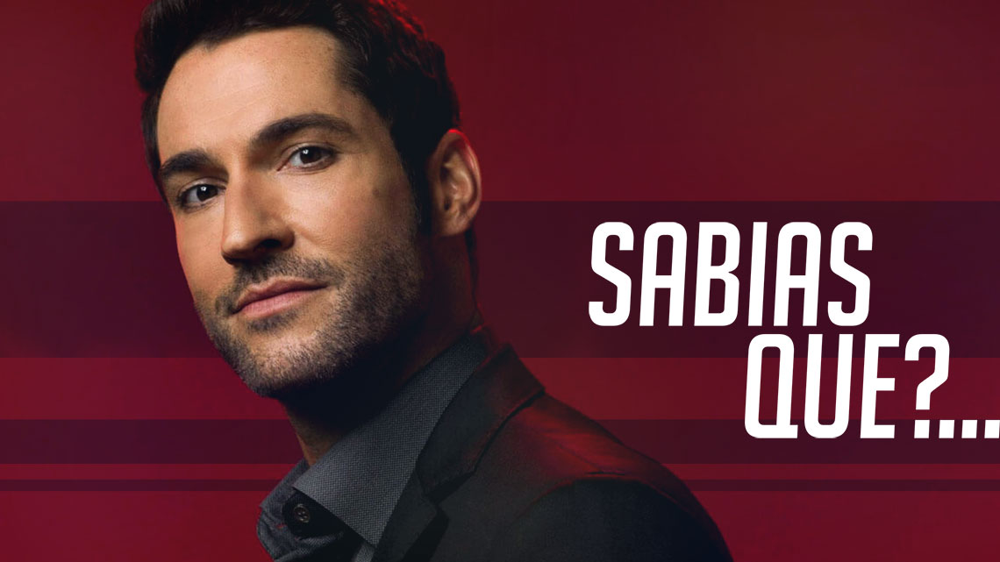

Curiosidades Lucifer

Continuamos a trazer curiosidades sobre as tuas séries favoritas e desta vez vamos dar a conhecer-te algumas sobre Lucifer, cuja 6.ª e última temporada está prestes a estrear:
1. O personagem que dá nome à série vai buscar uma pequena inspiração ao Lucifer Morningstar da banda desenhada The Sandman, da DC Comics, da autoria de Neil Gaiman, Sam Kieth e Mike Dringenberg. Aliás, The Sandman vai também ter uma adaptação televisiva e já estão confirmados vários nomes conhecidos no elenco.
2. Numa entrevista, o protagonista de Lucifer, Tom Ellis, revelou que a premissa da série como a conhecemos hoje se deve ao episódio piloto. Originalmente, a trama ia ser sobre Lucifer a lidar com pessoas desesperadas e desprezíveis de forma a ficar com ‘créditos’ para favores que cobraria mais tarde. No entanto, a série deu-se bem como procedural policial na estreia e as coisas foram alteradas para seguir este modelo.
3. Aproveitando a temática ligada ao Diabo, a Netflix, que ficou com a série depois desta ter sido cancelada pela FOX, anunciou a data de estreia da 4.ª temporada com 666 horas de antecedência.
4. Kevin Alejandro substituiu Nicholas Gonzalez no papel de Dan Espinoza já depois de o episódio piloto ter sido filmado. Todas as cenas de Dan foram gravadas novamente, já com Alejandro a dar vida ao personagem.
5. Originalmente, Lina Esco tinha sido escolhida para o papel de Maze Smith, mas depois de ter sido feita uma table read do primeiro episódio, a atriz foi dispensada e acabou por ser Lesley-Ann Brandt a assumir o papel.
6. Em 2015, o site One Million Moms, associado à organização fundamentalista cristã American Family Association (AFA), lançou uma petição que tinha como objetivo impedir a estreia da série. A justificação era a de que Lucifer “glorifica Satanás”. A petição não fez muito sucesso e acabou por ser também lançada no site da AFA, onde atingiu mais de 134 mil assinaturas até à data de estreia da série.
7. No entanto, o The National Catholic Reporter, um jornal americano que se dedica a noticiar questões relacionadas com a Igreja Católica, mas que não está dentro da esfera de autoridade da mesma, louvou a série, já em 2020, pelo seu retrato do tema da fé e das suas lutas. Ao admitir “a existência de Deus, a série explora de forma única ideias de livre-arbítrio, poder, responsabilidade e fé”.
Conhecias alguma destas curiosidades sobre Lucifer?